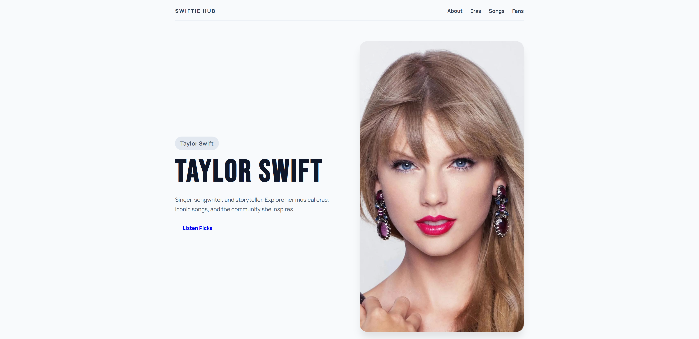
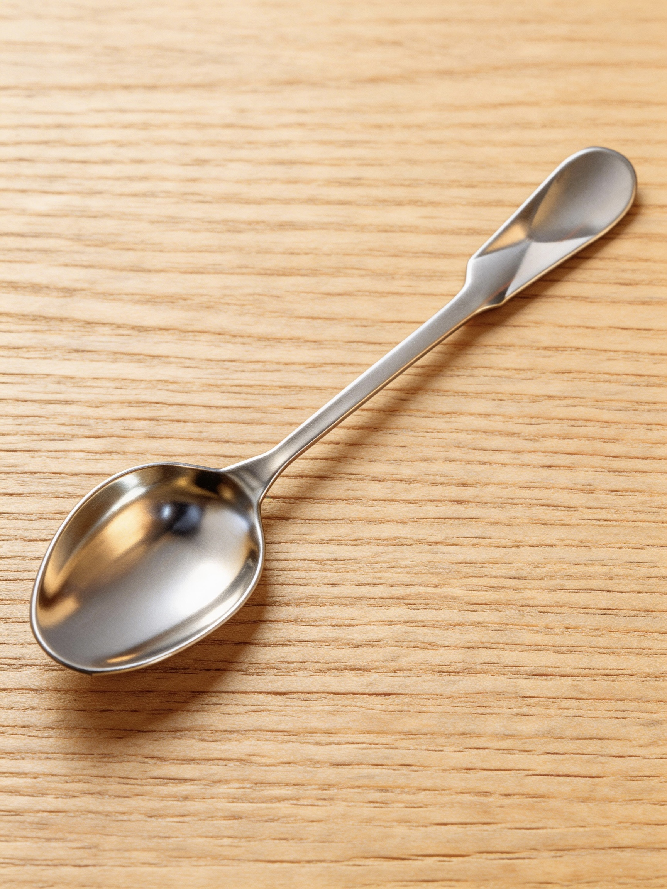

01
01
Soul Power World Tour
A concert poster for David Tao's 2026 tour, built around a dramatic live-performance image and bold display type.
View case studyGraphic design · Web · 3D
A collection spanning concert poster design, digital portfolios, and 3D modeling.
Explore selected workSelected work
A mix of visual storytelling,
digital design, and 3D making.
01
A concert poster for David Tao's 2026 tour, built around a dramatic live-performance image and bold display type.
View case study
02A Taylor Swift fan portfolio with an artist introduction and clear paths to explore her eras, songs, and community.
Portfolio · Information design
03A product-style spoon study with a reflective metal surface and warm wood presentation.
3D modeling · Product visualizationStart a conversation